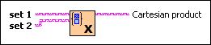

Set Cartesian Product VI
Owning Palette: Set VIs and Functions
Requires: Base Development System
Computes the Cartesian product of two sets. The Cartesian product is a set of 2-element clusters which covers all possible combinations of elements from the two sets.

 Add to the block diagram Add to the block diagram |
 Find on the palette Find on the palette |